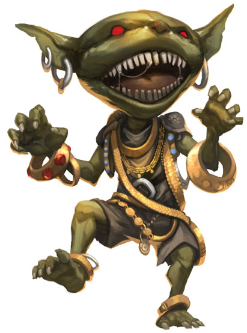

Source : Bestiaire p.162
PX 135
Init +6 ; Sens vision dans le noir 18 m (12 c) ; Perception -1
Défense
CA 16, contact 13, pris au dépourvu 14 (armure +2, bouclier +1, Dex +2, taille +1)
pv 6 (1d10+1)
Réf +2, Vig +3, Vol -1
Attaque
Corps à corps épée courte, +2 (1d4/19-20)
Distance arc court, +4 (1d4/x3)
Caractéristiques
For 11, Dex 15, Con 12, Int 10, Sag 9, Cha 6
BBA +1, BMO +0, DMD 12
Compétences Discrétion +10, Équitation +10, Natation +4 ; Modificateurs raciaux Discrétion +4, Équitation +4
Langues gobelin
Écologie
Environnement forêts/plaines tempérés (régions côtières surtout)
Organisation sociale bande (4-9), groupe de combat (10-16 avec de chiens gobelins comme montures) ou tribu (17+ plus 100% non combattants ; 1 sergent de niveau 3 par 20 adultes ; 1 ou 2 lieutenants de niveau 4 ou 5 ; 1 chef de niveau 6-8 ; et 10-40 chiens gobelin, loups ou worgs)
Trésor équipement de PNJ (arc court avec 20 flèches, armure de cuir, épée courte, rondache de bois, autres trésors)

| La large tête disgracieuse de cet humanoïde d’à peine un mètre semble totalement disproportionnée par rapport à son corps maigrelet.Les gobelins vivent généralement dans des grottes perdues
au cœur de vastes et denses fourrés de chardons et de ronces ou
dans les édifices que d’autres ont construits puis abandonnés. Les
gobelins qui ont le courage de bâtir des habitations eux-mêmes
sont très rares. Ils préfèrent les régions côtières car ils aiment
fouiller les épaves et les déchets flottants à la recherche de trésors
cachés parmi les détritus des races plus civilisées. Les gobelins peuvent haïr de manière très intense. Parmi
les choses qui attisent le plus leur colère, on trouve les
gnomes (qui ont longtemps combattu les gobelins), les
chevaux (que les gobelins trouvent terriblement effrayants)
et les chiens (qu’ils considèrent comme de pâles copies des chiens
gobelins). Les gobelins sont également très superstitieux et voient la magie
avec un mélange d’admiration et de crainte. Ils ont également
tendance à donner des qualités magiques à des choses tout à fait
normales : par exemple, la société gobeline accorde au feu et à
l’écriture des pouvoirs quasi mystiques. Les gobelins aiment
beaucoup le feu pour son énorme potentiel destructif et parce qu’il
n’est pas nécessaire d’être grand ou fort pour l’utiliser, mais ils
détestent l’écriture. Ils pensent qu’écrire vous enlève les mots de la
tête. C’est pour cela qu’ils sont tous illettrés. Les gobelins ont un appétit vorace et peuvent manger chaque
jour une quantité égale au poids de leur corps sans grossir
pour autant. Les repaires des gobelins comportent toujours de
nombreuses salles de stockage et réserves de nourriture. Ils
préfèrent la chair humaine et gnome mais ne refuseront pas les
autres types de nourriture, à l’exception des légumes peut-être. Les gobelins en tant que PJ
Les gobelins ne possèdent pas de dé de vie raciaux et progressent en acquérant des niveaux de classe. Leurs traits raciaux sont les suivants :
- -2 Force, +4 Dextérité, -2 Charisme. Les gobelins sont rapides mais faibles et peu agréables à côtoyer.
- Compétents. Bonus racial de +4 aux tests de Discrétion et d'Équitation.
- Petite taille. Les gobelins sont des créatures de taille P. Ils gagnent donc un bonus de taille de +1 à la CA, un bonus de taille de +1 aux jets d'attaque, un malus de -1 au BMO et au DMD et une bonus de taille de +4 aux tests de Discrétion.
- Rapidité. malgré leur taille, les gobelins sont rapides. Leur vitesse de déplacement de base est de 9 m (6 c).
- Vision dans le noir. Les gobelins peuvent voir dans le noir jusqu'à 18 m (12 c).
- Langues. Les gobelins parlent automatiquement le gobelin. S'ils ont une Intelligence élevée, ils peuvent choisir des langues supplémentaires parmi les suivantes : commun, draconique, gnoll, gnome, halfelin, nain, orque.
Voir aussiLa page de la race Gobelin
|